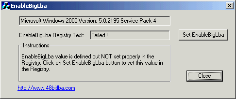
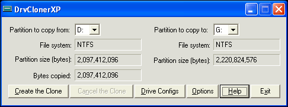
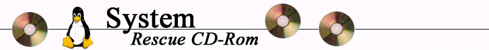

Transfer von einem WinXP System von einer Festplatte mit <128GB zu einer
Festplatte mit >128GB
Alle Angaben ohne Gewähr!
-
EnableBigLba
Das Werkzeug EnableBigLba Tool and activiert in WinXP mit SP1 den
Registry-Eintrag zur Verwendung von Festplatten größer als 128GB.

-
Die neue Festplatte anschleißen und vom BIOS und WinXP erkennen lassen.
-
Partition einrichten und formatieren der neuen Festplatte.
-
Das Werkzeug DrvClonerXP überführt die Daten von einer
Festplatte auf die andere.

-
Nun die neue große Festplatte mit der alten kleinen Festplatte im System
auswechseln. Dazu die Kabel umstecken und, wenn notwendig, die Jumper setzen.
-
Falls man die Festplatte schon ohne "EnableBigLba" partitioniert, formatiert
und kopiert hat und den zusätzlichen Platz auf der neuen Festplatte
ausnutzen möchte, kann man die NTFS-Partition wie folgt
vergrößern.
-
NTFSresize auf der System Rescue CD unter Linux dazu verwenden die Partition auf der
neuen Festplatte auf maximale Größe zu bringen.


Home